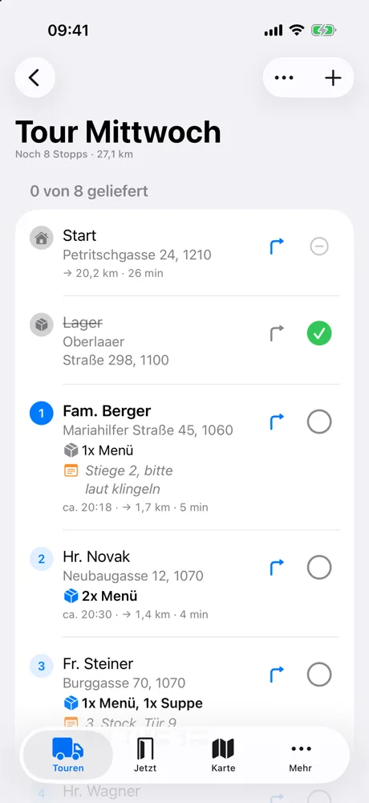
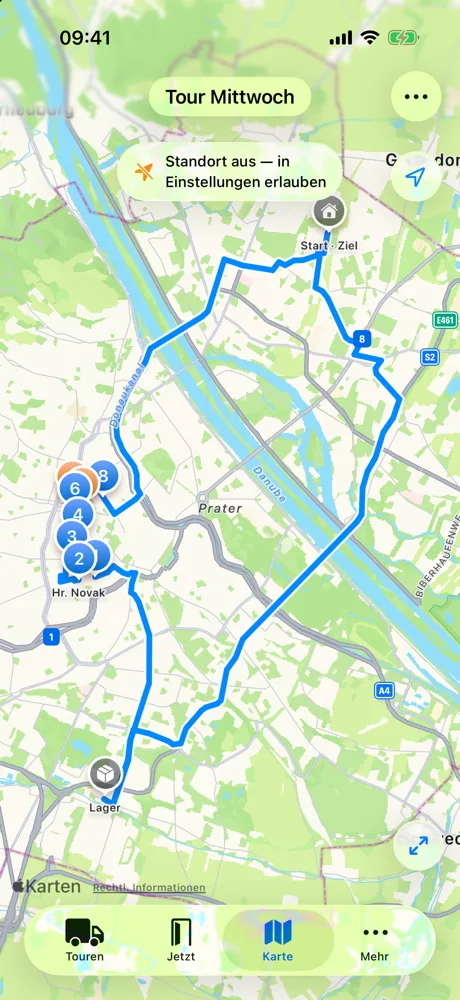
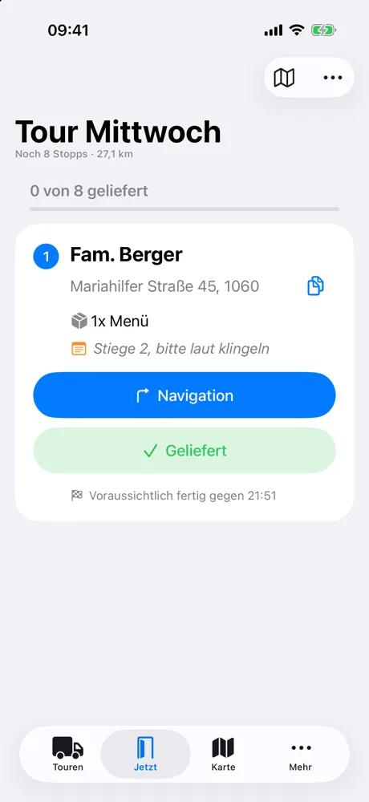

EAR Router in daily use
Offline-first iOS route planner for the Meals on Wheels drivers in Vienna.
- Loads the day's tour from the delivery company's portal. Every address is checked against Vienna's own building register, with Nominatim as the fallback and a check that the result landed in the right district.
- Understands Viennese addresses:
Stiege,Tür, garden-colonyParzelles, house numbers glued to the street name. - Stop order comes from a self-hosted OSRM server. Arrival times use the pace the driver actually kept that day, a model backtested on 12 real tours.
- Remembers which floor every customer lives on. Has CarPlay and a "Hey Siri, nächster Stopp" shortcut. No third-party dependencies.



SwiftUISwiftDataMapKitCarPlaySwift 6OSRM